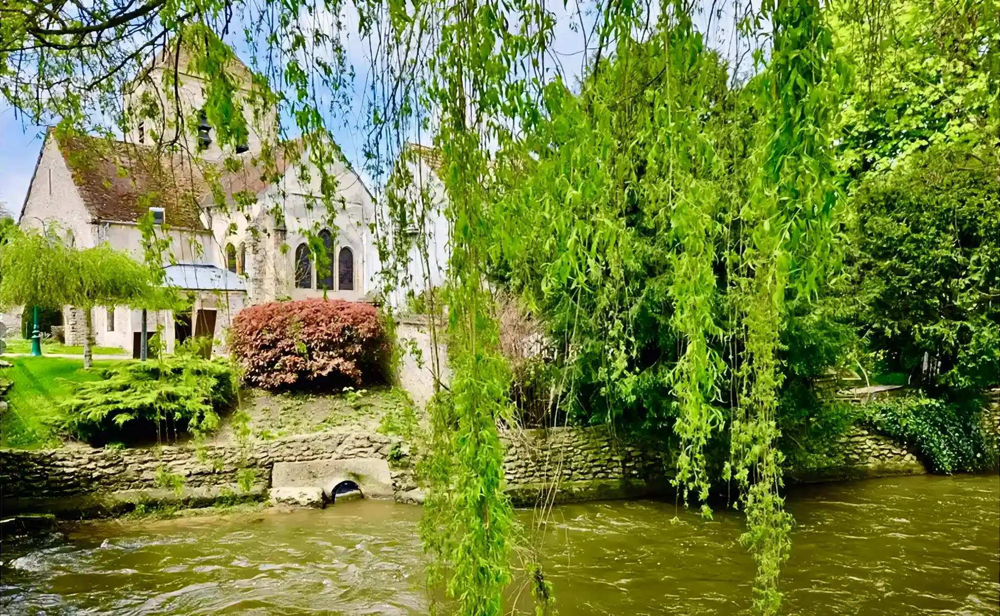
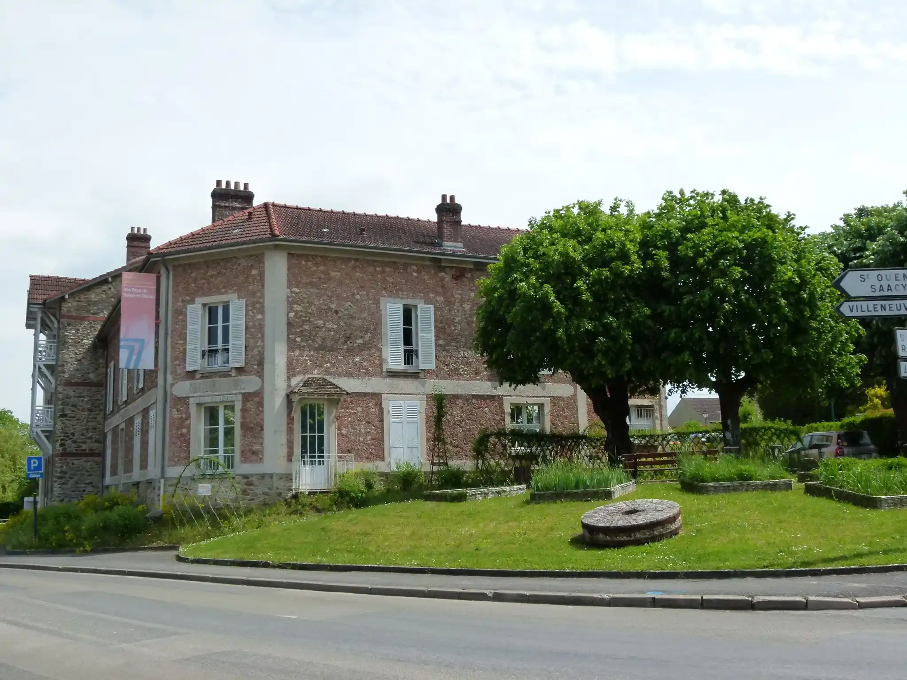

Notre identité
Un village de
caractère en Brie
Niché dans la vallée du Morin, Saint-Cyr-sur-Morin est un village de Seine-et-Marne qui mêle patrimoine rural authentique et cadre de vie paisible à moins d'une heure de Paris.
Moulins historiques, sentiers de randonnée le long du Petit Morin, Musée de la Seine-et-Marne et maison de Pierre Mac Orlan… la commune cultive son identité tout en se tournant vers l'avenir.
Découvrir le village

